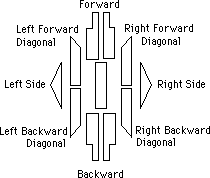

Notation of DanceChoreographic work requires a way to record synchronized steps for many people. Eleven dance symbols  An example. I do not know what a lot of this means. There are directions for four feet. The horizontal lines seem to be musical measures. The length of a box seems to imply the length of a step. I do not know what the various shadings mean. Maybe stomping? lo-tech notation
Mac choreography software Dance Writing (example) ReferencesCreated: Monday, September 20, 1999 Last modified: May 22, 2002 email: McKeeman{at}Mathworks{dot}COM |